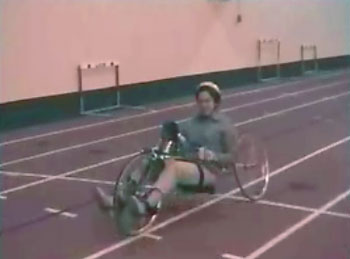

Home / Program Details / Handcycling
Handcycling
Handcycling will introduce participants to the sport of handcycling. Participants will see a variety of models of handcycles. Participants will experience riding different handcycles that are appropriate to their functional level.
Objectives:
- Participant will be introduced to the sport of handcycling.
- Participant will be exposed to various models of handcycles.
- Participants will learn the physical benefits of handcycling: increased range of motion, increased endurance, increased upper body strength.
- Participant will learn that handcycling is an integrated, recreational group sport.
- Participants will receive information on where to purchase a handcycle and learn where handcycles may be available free of charge from state parks.
Plan:
- Coordinate handcycling dates with handcycling organization.
- Schedule a training day for staff so they may familiarize themselves with a handcycle, learn how to transfer participants and make modifications on the bike.
- Once participant is transferred to a bike, 1 staff should provide safety for the rider and make appropriate adjustments if needed.
Staff:
One volunteer or staff member per participant.
Contact:
Adaptive handcycling organization that will be available to provide a handcycling module.
Site criteria:
Any open, smooth, paved lot, state park or gym area with accessible bathrooms. If outdoors, be near a shady site or bring a large tent for cover.

Equipment and supplies:
Handcycles provided by organization
Helmets
Ace wraps
Duct tape
Scissors
Gait belts
Allen wrenches
First Aid Kit
Water
Spray bottles
Sunscreen
Slide board
Bug spray
Gloves
Hat
Sunglasses
Sunscreen
Water bottle
Resources:
Angletech 800-793-3038
Bike-On.com www.bike-on.com 401-943-5040 (ext 411)
Brike Int.Ltd. www.freedomryder.com 800-800-5828
Lightning Handcycles www.handcycle.com 888-426-3292
Northeast Passage, Durham, NH www.nepassage.org 603-862-0070
One Off Titanium 413-634-5591
US Handcycling Federation www.ushf.org 303-670-8290
Adult Performance Trikes bikeroute.com